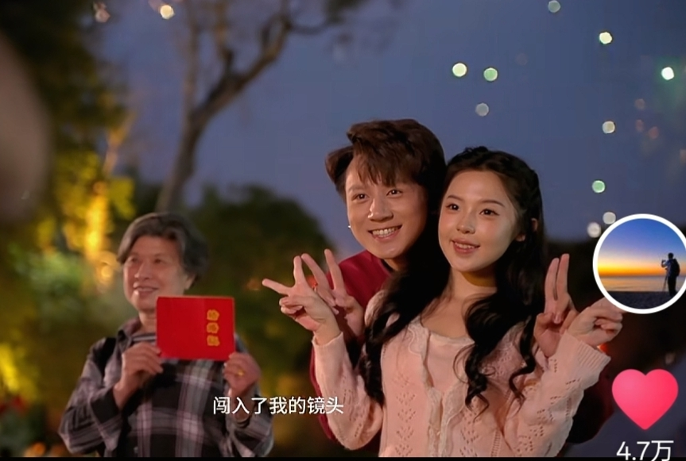

邓超：十年也没见你穿这个，结果在电视上看到了
哪有什么无性婚姻，只不过是有人替你负重前行罢了。
为什么孙俪演戏都是一个样啊[笑哭]好疲劳
最狠的一招 把男人养成生活废物[呲牙]
我的四姥姑是从苏联毕业回到中国，作为一名普通的核工程师，当年就在类似这种816工程的地下核工业设施默默奉献了10年，后来因为受到了超量的辐射，01年得了肺癌离开了我们，那时候我还小，我见她的唯一的一面是那年和我母亲送她回陕北榆林，我妈妈送她回陕北，那时她已确诊肺癌，想回陕北告慰祖先，她和我妈妈坐在回陕北的软卧车厢，我忘记了那是个什么季节，我当时还小，自然不知软卧和硬卧的区别，但是感觉她坐的那个位子非常宽敞，而且桌上有一整颗西瓜，很抱歉，因为我当时还小（仅4岁），记忆只是支离破碎的，我对我的四姥姑仅有这么一点记忆，长大后听大人们讲起，才知道她的伟大。致敬我的长辈，也致敬所有默默奉献的中国人！
816我打洞一年，405我打洞4年，当时条件太艰苦了，我们这帮兵，最小的都70多岁了。
老爸是核工业西北基地迁入西南三线建设，老岳父是816的，老岳父92岁目前还健在！
永远不会忘记李玉说“赶紧喝了吧”
“我不信阿玛就会这样走了” “臣妾不信为了区区几十两银子就敢谋害皇嗣” [绝望的凝视][绝望的凝视][绝望的凝视][绝望的凝视]
以后有听不完的哈语歌了
[微笑][微笑]她们是真会打，开局呲杆都是逗你玩的呢。
这节目效果很难不怀疑她们在控分，可是看她们出手又不像
子涵大帝！
给我一种感觉，子涵前面是真的技术，然后偶尔做做节目效果，这次真发力了[发呆]
全网最火珊瑚颂[爱心][爱心][爱心]
穿过这种鞋子的都多大了？
玩过这个的，都几岁了
打一半嬴政驾崩了[憨笑]
《老蒋当年眼中的自己》
[泪奔]
嬴政打到一半被胡亥顶号了，李世民打到一半被李隆基登号了，老朱打到一半，被朱允文顶号了，朱棣:奉天靖难go go go
我怀疑老朱在岛上找到了这四位[看]
女生：男生不回消息都在干嘛 男生：反清复明！！
老朱：那几个大正统都快嘎了是吧?
老朱退到岛上触发开局一个碗的被动了[捂脸]
666秦二世上位了
嬴政和李世民打一半没了[憨笑]是谁顶号了好难猜呀
大清触发被动：割地赔款 大明触发被动：开局一只碗
朱元璋都被打成孤岛奇兵了，这都能翻盘
五吨炮弹是什么概念[展开说说]，我得一辆卫士就三吨
啵啵
张啵啵不怕事，也不来事，也不怕来事，也不怕不来事， 也怕来不了事，也怕事不来
《惹事儿小狗与怕事儿老黄牛》
谁家小女孩这样睡觉？
哈哈哈
啵啵咋能听懂人话啊，一说下楼立马起来了

张啵啵超绝大汗脚 谁敢闻[好开心]
格子裤你家为啥这么多哇哈哈 摆的整整齐齐的还[黑脸][感谢]
啵啵这大粗脖子 往那一趟以为堆堆袜掉地上了[憨笑][憨笑][憨笑][憨笑]
&对不起，我j以为是烤猪[微笑]
第一眼：“怎么把烤猪放河里了”[泪奔][泪奔][泪奔]
工作室是不是来了个高人？
很喜欢别人对她的一句评价：“她每次都体面营业，随着热度消退悄悄退场。”[赞]
这么潮，工作室来新人啦[宕机][宕机]
没人懂这一幕吗简直仙品
限时返场 懂的人已经泪流满面了[蜜蜂狗]
梁洁除了《白色橄榄树》《绝世双骄》还有什么剧啊啊我都要去追[泣不成声]
第一眼：完了要跳舞，你们谁惹她了[你不大行] 第二眼：没惹，姐姐太美惹![舔屏]
树下暮歌[眼含热泪]谁懂
我是觉得你的拉丁舞跳的最好看👍
104.4万了[泣不成声]梁洁苦尽甘来，换了公司就是好
我可能遇到了救星的兵还在吗[流泪]
梁洁你绝对是有喜欢的人了！！！！！舞都不跳了！
姐姐 你有夸屎了？[黑脸]
太喜欢的氛围感[玫瑰][玫瑰][玫瑰]
想艾特一位老师看到 但又不太敢[躺平]
猫妈妈：终于找到免费保姆了，不聊了蹦迪去
孩子都快哭了
菜包聋成这样还好咕咕[微笑]
菜宝，豆子不吃我不吃 豆子，孩子们不吃我不吃 丧彪，桃子不吃我不吃 大宝，叫就吃 桃子，叫就吃，不叫也吃，吃完就抢
彪家军在哪里
大宝怎么bong一下变的这么大了[惊喜]
菜宝：第一个叫我吃我有点不敢
菜宝还好咕咕呢
其实细瞳我们也喜欢 不必只挑圆瞳发的
苏橙橙又变身了[泪奔][泪奔][泪奔]
姐反射弧有点长哈哈哈好可爱
好，看一眼我学会了，我去水库试试
你们的宝宝好爱你们啊 [流泪] 居然把自己的冲冲面分享给你俩吃 [思考] 还给你俩加了鸡蛋！！！我家护食的很
国家不是提倡要孩子么 我就要这个了[左上]
好能干的宝宝 又是搬厨房又是剥鸡蛋 还记得宝宝馋了冲冲面要泡30秒认认真真的数数
好家伙，看把娃操心的，把父母养的白白胖胖的
应该放个歌，懒羊羊当大厨[黑脸]
恭喜了，愿你们幸福长久，也祝福我自己找到属于我的一辈子[抱抱你]
视频中的人：👥 观众：👤
原来有些事情真的是缘分，命中注定。
谁能懂当两代人的爱情同框出现的时候啊[苦涩]

谁懂[流泪][流泪]

哥们你看，打这里可以吗

最近想戴个耳环，是这样打耳洞吗？
谁懂啊，两对情侣，感觉是跨越时空的对话[泣不成声]
冷知识，这种老式结婚证，两个人是连在一起的！不是分开一人一本[泣不成声] 
超美的
Read more: